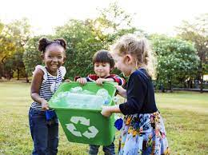

our recent posts

Our life will be waste if we have no any goal. Without any goal we will feel unlucky, waste life etc. But if we don't Save Planet Earth then, our Earth will be destroyed and we can't live. So, Save Planet Earth.
Tigers have been a protected species for many years, but despite this they are increasingly threatened by extinction due to poaching and increasing conflict with humans
volunteers
trees planted
animals saved
donators
As stated, container grown plants can be safely planted at any time of the year, but they are best planted in the fall to take advantage of the dormant season root growth.
read more>>Recycling is a key component is the third Recycling is the process of converting waste materials into new materials and objects component of the "Reduce, Reuse, and Recycle" waste hierarchy.
read more>>Water is expected to be a major source of conflict in future because demand is soaring and freshwater reserves are severely stressed. use of water is a matter of serious concern.
read more>>A tree typically has many secondary branches supported clear of the ground by the trunk.tissue for strength, and vascular tissue to carry materials from one part of the tree to another.
read more>>Animal welfare is the well-being of non-human animals. Formal standards of animal welfare vary between contexts. Animal welfare is the well-being of non-human animals ,but animal welfare groups.
read more>>od loss and waste is food that is not eaten. The causes of food waste or loss are numerous occur throughout the food system, during production, processing, distribution, retail and food service .
read more>>